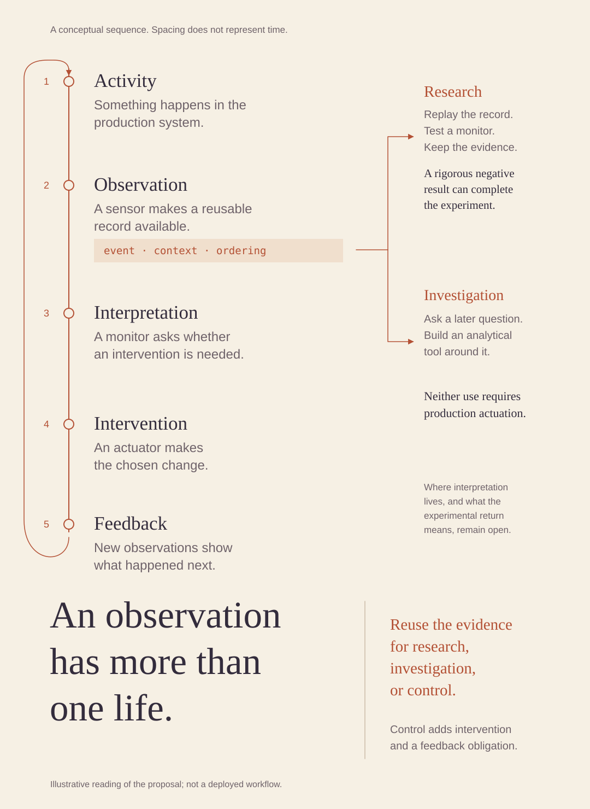

Annotated editorial
Encounter the evidence first. Arrive at the large conclusion after the figure.

A long reading surface follows an event through the control loop. Reuse is attached directly to the record in a second column. The headline acts as a conclusion, with no card grid or uniform section blocks.
Text equivalent and limits
An illustrative sequence contains activity, observation, interpretation, intervention and feedback. A sensor record may also be replayed in research or investigated later. A rigorous negative result can complete a research experiment. These two uses do not require production actuation. The annotation and the return path distinguish recording evidence from intervening and obtaining feedback. The sequence is conceptual; spacing does not represent time. Where interpretation lives and what the experimental return means remain open.
This approved static reference interprets a control-program proposal. It is calibration material, not a deployed system or factual input for another artifact.